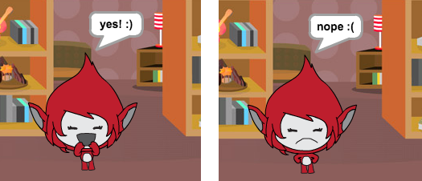
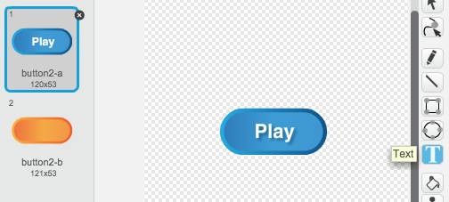

У цьому проекті ви дізнаєтеся, як створити свою гру-вікторину, в якій ви маєте надати якомога більше правильних відповідей за 30 секунд.
Крок 1: Створення запитань
Розпочнімо зі створення випадкових запитань для гравця.
Завдання для виконання
Створіть новий проект у Скретч та видаліть спрайт кота, так щоб проект став пустим.
Виберіть персонаж і фонове зображення для вашої гри. Ви можете вибрати будь-який! Ось приклад:
screenshot
Створіть 2 нові змінні з іменами число 1 і число 2. Ці змінні зберігатимуть 2 числа, які ми пізніше будемо множити одне на одне.
screenshot
Додайте наступний скрипт до вашого персонажа, який присвоїть нашим змінним випадкові числа між 2 і 12.
screenshot
Після цього ми просимо гравця дати відповідь і показуєємо йому, помилився він чи відповів вірно.
screenshot
Протестуйте ваш проект, надавши одну правильну і одну неправильну відповідь.
Для того щоб ми могли ставити більше одного запитання, внесіть в написаний до цього код блок-цикл завжди.
На сцені створіть таймер зворотного відліку, використовуючи змінну час. У цьому вам може допомогти урок "Полювання на відьом". На 4-му кроці ви можете знайти інструкції як це зробити!
Знову протестуйте свій проект - запитання повинні ставитися гравцю доти, доки не закінчиться відлік часу.
Збережіть свій проект
Виклик: Зміна вигляду персонажу
Чи можете ви змінювати образи вашого персонажа таким чином, щоб вони змінювалися в залежності від відповіді гравця?
screenshot
Виклик: Додаємо рахунок
Чи можете ви додати у вашу гру рахунок? Як варіант, можна додавати по одному балу за кожну правильну відповідь. Якщо вам хочеться зробити велику капость, можете навіть обнуляти рахунок гравця, якщо він дав невірну відповідь!
Крок 2: Багаторазові ігри
Додаймо кнопку "Почати гру", таким чином ви зможете заново її починати, не натискаючи кожного разу на зелений прапор.
Завдання для виконання
Створіть новий спрайт кнопки "Почати гру". Можете намалювати його самостійно або ж відредагувати один зі спрайтів бібліотеки Scratch.
screenshot
Додайте цей код до нової кнопки.
screenshot
Код, написаний вище, показує кнопку, коли ви запускаєте проект. Коли гравець на неї тисне, вона щезає і передає повідомлення, яке запускає гру.
Вам потрібно відредагувати код вашого персонажа таким чином, щоб гра починалася тоді, коли ми отримуємо повідомлення старт, а не коли клацають по зеленому прапорцю.
Замініть фрагмент коду коли натиснуто прапорець на коли я отримаю старт.
screenshot
Клацніть по зеленому прапорцю і потім по кнопці "Почати гру", протестуйте як все працює. Ви повинні переконатися в тому, що гра не почнеться, поки кнопку не було натиснуто.
Зверніть увагу, що таймер починає свій відлік, коли ви клікнули по зеленому прапорцю, а не після натискання на кнопку.
screenshot
Зожете вирішити цю проблему?
Перейдіть на сцену, замініть блок зупинити все на повідомлення кінець.
screenshot
Тепер ви можете додати код до вашої кнопки, який знову буде показувати її в кінці кожної гри.
screenshot
Вам також потрібно зробити так, щоб ваш персонаж перестав запитувати вкінці кожної гри:
screenshot
Зіграйте кілька разів, щоб протестувати кнопку "Почати гру". Запевніться, що кнопка з'являється після кожної гри. Ви можете зменшити час гри, так щоб вона тривала декілька секунд - це пришвидчить час перевірки.
screenshot
Ти також можеш змінити вигляд кнопки, коли наводиш на неї курсором.